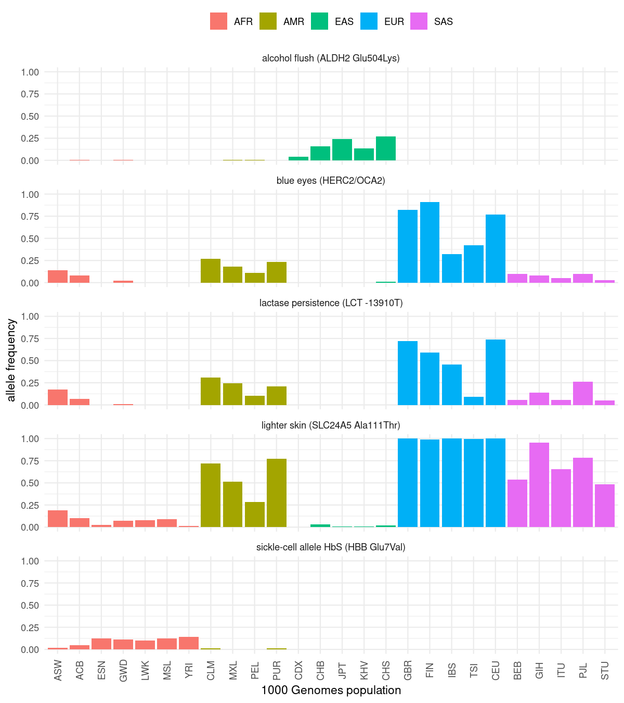

Exercise in R: genomic variation
Goal
By the end of this exercise you should be able to:
- join a table of allele frequencies with a table of population information using
left_join(), also when the key columns have different names; - check a join with
anti_join(), and fill in missing combinations (alleles with count 0) with a join andcoalesce(); - summarise and plot allele frequencies by population and continental group.
Before you start
This page builds on the Exercise; do Find it F3 (Ensembl population genetics for rs4988235) first. You need the packages readr, dplyr and ggplot2. Download the two files and save them in a data/ folder of your R project:
- snp_frequencies.csv: allele counts and frequencies of five SNPs in the 26 populations of the 1000 Genomes Project (phase 3), from the Ensembl REST API, release 116 (
/variation/human/<rsid>?pops=1). - populations.csv: the 26 population codes, their description and their continental group (superpopulation), from the 1000 Genomes data portal.
See data/README.md for the exact sources. The five SNPs:
| SNP | Gene | Effect allele (plus strand) | Trait |
|---|---|---|---|
| rs4988235 | MCM6/LCT | A (= −13910T) | lactase persistence |
| rs334 | HBB | A (c.20A>T) | sickle-cell allele HbS |
| rs1426654 | SLC24A5 | A (Thr111) | lighter skin pigmentation |
| rs12913832 | HERC2/OCA2 | G | blue eyes |
| rs671 | ALDH2 | A (Lys504) | alcohol flush reaction |
Tasks
You met left_join() in Genome annotation, where both tables had a column called chromosome. This time the key has different names in the two tables (population in one, code in the other); join_by(population == code) says which columns to match. Two more join verbs help you check your data: anti_join(x, y) returns the rows of x that have no match in y, and cross_join(x, y) makes every combination of rows.
library(readr)
library(dplyr)
library(ggplot2)R1. (look at the data) Read both files. How many rows does each SNP have in the frequency table? With 26 populations and two alleles, you might expect 52. Look at rs4988235 in three populations to see why some are missing.
freqs <- read_csv("data/snp_frequencies.csv")
pops <- read_csv("data/populations.csv")
freqs
pops
freqs |> count(snp, gene)
freqs |> filter(snp == "rs4988235", population %in% c("YRI", "CEU", "CHB"))R2. (join the population information) Add the superpopulation to each frequency row. Then use anti_join() to check that every population code in freqs was found in pops.
freqs_pop <- freqs |>
left_join(pops, by = join_by(population == code))
freqs_pop |> select(snp, population, allele, frequency, superpopulation) |> head(4)
freqs |> anti_join(pops, by = join_by(population == code)) |> nrow()R3. (one effect allele per SNP, zeros included) We want the frequency of the effect allele of each SNP in all 26 populations, including those where it was not seen. Make a small table of the effect alleles, combine every population with every SNP using cross_join(), then left_join() the frequencies. Combinations without a match get NA, which here means “not observed”, so replace it with 0 using coalesce().
effect <- tribble(
~snp, ~allele, ~trait,
"rs4988235", "A", "lactase persistence (LCT -13910T)",
"rs334", "A", "sickle-cell allele HbS (HBB Glu7Val)",
"rs1426654", "A", "lighter skin (SLC24A5 Ala111Thr)",
"rs12913832", "G", "blue eyes (HERC2/OCA2)",
"rs671", "A", "alcohol flush (ALDH2 Glu504Lys)"
)
eff <- pops |>
cross_join(effect) |>
left_join(freqs |> select(snp, population, allele, frequency),
by = join_by(code == population, snp, allele)) |>
mutate(frequency = coalesce(frequency, 0))
nrow(eff)
eff |> filter(snp == "rs4988235") |> arrange(desc(frequency)) |> select(code, superpopulation, frequency) |> head(6)Why must the join use three columns (code == population, snp and allele)? Compare your top six with Find it F3.
R4. (summarise by continent) Compute the mean effect-allele frequency over the populations of each superpopulation, for each SNP.
eff |>
group_by(snp, superpopulation) |>
summarise(mean_freq = round(mean(frequency), 3), .groups = "drop") |>
print(n = 25)Which SNP shows the largest difference between superpopulations? Which allele is found almost only in one continental group?
R5. (plot frequency by population) Order the populations by superpopulation, then draw one bar per population, coloured by superpopulation, with one panel per trait.
eff <- eff |> mutate(code = factor(code, levels = pops |> arrange(superpopulation) |> pull(code)))
ggplot(eff, aes(x = code, y = frequency, fill = superpopulation)) +
geom_col() +
facet_wrap(~ trait, ncol = 1) +
labs(x = "1000 Genomes population", y = "allele frequency", fill = NULL) +
theme_minimal(base_size = 11) +
theme(axis.text.x = element_text(angle = 90, vjust = 0.5), legend.position = "top")Describe the pattern for lactase persistence within Europe (GBR, FIN, IBS, TSI, CEU). Where is HbS found?
R6. (from allele to genotype frequencies) For lactase persistence and HbS, compute in a few populations the expected fraction of heterozygotes (2q(1 − q)), homozygotes (q2) and people with at least one copy (1 − (1 − q)2), assuming Hardy–Weinberg proportions. For which trait is “at least one copy” the relevant number, and for which is “homozygotes”?
eff |>
filter(snp %in% c("rs4988235", "rs334"), code %in% c("YRI", "GWD", "LWK", "CEU", "GBR", "FIN", "TSI", "CHB")) |>
mutate(q = frequency,
het = round(2 * q * (1 - q), 3),
hom = round(q^2, 4),
at_least_one = round(1 - (1 - q)^2, 3)) |>
select(snp, code, q, het, hom, at_least_one) |>
arrange(snp, desc(q))Solutions
All output below is from Rscript --vanilla (R 4.6.2) run in the unit folder. The messages that read_csv() prints about column types are left out.
R1.
# A tibble: 205 × 6
snp gene population allele allele_count frequency
<chr> <chr> <chr> <chr> <dbl> <dbl>
1 rs12913832 HERC2/OCA2 ACB A 177 0.922
2 rs12913832 HERC2/OCA2 ACB G 15 0.0781
3 rs12913832 HERC2/OCA2 ASW A 105 0.861
4 rs12913832 HERC2/OCA2 ASW G 17 0.139
5 rs12913832 HERC2/OCA2 BEB A 155 0.901
6 rs12913832 HERC2/OCA2 BEB G 17 0.0988
7 rs12913832 HERC2/OCA2 CDX A 186 1
8 rs12913832 HERC2/OCA2 CEU A 46 0.232
9 rs12913832 HERC2/OCA2 CEU G 152 0.768
10 rs12913832 HERC2/OCA2 CHB A 206 1
# ℹ 195 more rows
# A tibble: 26 × 4
code description superpopulation superpopulation_name
<chr> <chr> <chr> <chr>
1 CDX Chinese Dai in Xishuangbanna, Chi… EAS East Asian
2 CHB Han Chinese in Bejing, China EAS East Asian
...
# A tibble: 5 × 3
snp gene n
<chr> <chr> <int>
1 rs12913832 HERC2/OCA2 44
2 rs1426654 SLC24A5 48
3 rs334 HBB 35
4 rs4988235 MCM6/LCT 43
5 rs671 ALDH2 35
# A tibble: 4 × 6
snp gene population allele allele_count frequency
<chr> <chr> <chr> <chr> <dbl> <dbl>
1 rs4988235 MCM6/LCT CEU A 146 0.737
2 rs4988235 MCM6/LCT CEU G 52 0.263
3 rs4988235 MCM6/LCT CHB G 206 1
4 rs4988235 MCM6/LCT YRI G 216 1Each SNP has fewer than 52 rows because Ensembl lists only alleles that were observed in a population. In CHB and YRI, rs4988235 has only the G allele (frequency 1), so the A row is missing, not zero. (rs1426654 has 48 rows, not 52, for the same reason.)
R2.
# A tibble: 4 × 5
snp population allele frequency superpopulation
<chr> <chr> <chr> <dbl> <chr>
1 rs12913832 ACB A 0.922 AFR
2 rs12913832 ACB G 0.0781 AFR
3 rs12913832 ASW A 0.861 AFR
4 rs12913832 ASW G 0.139 AFR
[1] 0All population codes matched: anti_join() returns 0 rows. (Always check: a misspelled code would silently give NA in the joined columns.)
R3.
[1] 130
# A tibble: 6 × 3
code superpopulation frequency
<chr> <chr> <dbl>
1 CEU EUR 0.737
2 GBR EUR 0.720
3 FIN EUR 0.591
4 IBS EUR 0.458
5 CLM AMR 0.308
6 PJL SAS 0.26026 populations × 5 SNPs = 130 rows, one per population and SNP, now including the zeros. The join needs all three columns: the population alone would match every SNP and both alleles; snp and allele make sure we pick the effect allele of the right SNP. The top four are European populations, as in Ensembl (CEU 0.737, GBR 0.720, FIN 0.591, IBS 0.458).
R4.
# A tibble: 25 × 3
snp superpopulation mean_freq
<chr> <chr> <dbl>
1 rs12913832 AFR 0.034
2 rs12913832 AMR 0.197
3 rs12913832 EAS 0.002
4 rs12913832 EUR 0.648
5 rs12913832 SAS 0.072
6 rs1426654 AFR 0.082
7 rs1426654 AMR 0.571
8 rs1426654 EAS 0.012
9 rs1426654 EUR 0.997
10 rs1426654 SAS 0.681
11 rs334 AFR 0.095
12 rs334 AMR 0.006
13 rs334 EAS 0
14 rs334 EUR 0
15 rs334 SAS 0
16 rs4988235 AFR 0.036
17 rs4988235 AMR 0.216
18 rs4988235 EAS 0
19 rs4988235 EUR 0.519
20 rs4988235 SAS 0.113
21 rs671 AFR 0.001
22 rs671 AMR 0.003
23 rs671 EAS 0.17
24 rs671 EUR 0
25 rs671 SAS 0The largest difference is for rs1426654 (SLC24A5): 0.997 in Europeans against 0.012 in East Asians and 0.082 in Africans. Alleles found almost only in one group: HbS (rs334, African populations, with traces in the admixed American samples), and the ALDH2 Lys504 allele (rs671, East Asian, 0.17 on average). The SLC24A5 allele is a reminder that light skin evolved separately in Europe and East Asia: East Asians are light-skinned without this allele.
R5.

Lactase persistence shows a north–south gradient within Europe: high in the British (0.72), CEU (0.74) and Finns (0.59), intermediate in Spain (0.46) and low in Tuscany (0.09). It is also present in the admixed American and South Asian populations, and at low frequency in the African-Caribbean and African-American samples (ACB, ASW), through European admixture. HbS is found in the five African populations (0.10–0.14), less in ACB and ASW, and at very low frequency in the Colombian and Puerto Rican samples.
R6.
# A tibble: 16 × 6
snp code q het hom at_least_one
<chr> <fct> <dbl> <dbl> <dbl> <dbl>
1 rs334 YRI 0.139 0.239 0.0193 0.259
2 rs334 GWD 0.115 0.204 0.0132 0.217
3 rs334 LWK 0.101 0.182 0.0102 0.192
4 rs334 CHB 0 0 0 0
5 rs334 GBR 0 0 0 0
6 rs334 FIN 0 0 0 0
7 rs334 TSI 0 0 0 0
8 rs334 CEU 0 0 0 0
9 rs4988235 CEU 0.737 0.387 0.544 0.931
10 rs4988235 GBR 0.720 0.403 0.518 0.921
11 rs4988235 FIN 0.591 0.483 0.349 0.833
12 rs4988235 TSI 0.0888 0.162 0.0079 0.17
13 rs4988235 GWD 0.0088 0.017 0.0001 0.018
14 rs4988235 CHB 0 0 0 0
15 rs4988235 LWK 0 0 0 0
16 rs4988235 YRI 0 0 0 0Lactase persistence is dominant, so the fraction of persistent adults is at least one copy: 93% in CEU, 83% in FIN, 17% in TSI (as in B4). Sickle-cell disease is recessive, so the disease frequency is the homozygote fraction: about 1.9% of births in YRI, while about 24% are carriers (het), as in B5. These numbers assume random mating; the Hardy–Weinberg unit in Part 7 tests that assumption.
Where this leads
The same idea, joining a table of measurements with a table that describes the samples, is the core of most genomic data analysis. In Part 6 you join gene-expression data with tissue information, and in Part 7 you use genotype counts like these to test Hardy–Weinberg equilibrium with a χ² test.